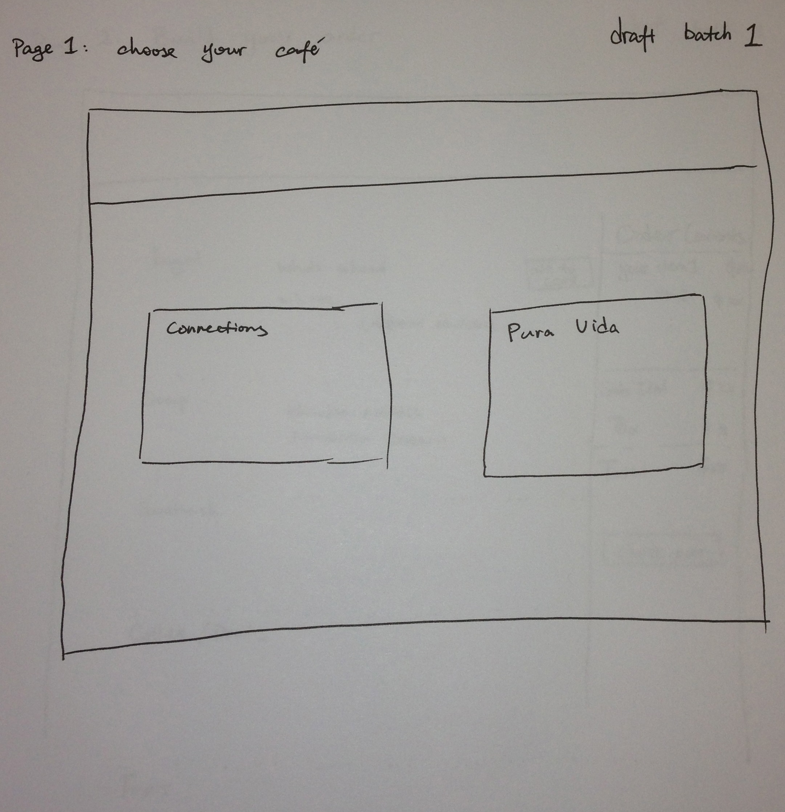

PRESTIGE WORLDWIDE - FINAL REPORT
MATT DEMARTINOClass Year: Senior Major: Computer Science Title: Account Executive Contribution: Corporate Relations, front-end development |
YUNPING SHAOClass Year: MS First Year Major: Computer Science Title: Analyst Contribution: Writing, statistical analysis |
CAROLYN SOHMERClass Year: Sophomore Major: Computer Science & Digital Media Title: Operations Manager Contribution: Design, writing, quality assurance |
ZACH TAYLORClass Year: Junior Major: Computer Science, Economics, & International Relations Title: Junior Account Executive Contribution: Corporate Relations, front-end development |
TED TEUMERClass Year: Senior Major: Computer Science & Statistics Title: Business Intelligence Developer Contribution: Development, data integrity |

RU ZHAOClass Year: Senior Major: Computer Science Title: Back-end Developer Contribution: Back-end development, database design/implementation |
Mentor
MICHELLE FUNGLikes origami |
Project Proposal
Definition
On campus there's a restaurant located near the IT center called "Connections" that sells mainly breakfast-type food items. We like to go there a lot but find that the time many students want to go is in between classes and often they don't have the time to go, because the line is too long.
Requirements
- Needfinding survey
- Online survey
- Video interviews
- Evaluations
- Student evaluations
- Staff evaluations
- Prototype
- User-end website
- Homepage
- User log-in
- Food information (involves back-end database)
- Order placement (edits the order queue back-end, which edits the employee-side order queue page)
- Connections employee website
- Homepage
- Employee log-in
- Inventory edit (accesses same back-end database that displays the items on the food information and order placement pages)
- Order queue (back-end database keeps track of orders and sends them to order queue page; must also be able to edit queue database)
System
Evaluation
Act
Needfinding
We distributed a survey to UR students, and the result is analyzed. 175 students participated in this survey. Connections and Pura Vida
are the least visited cafes around the campus. (show data in table) 9 out of 175 students visited Connections daily, 21 visited Connections
2-3 times per week, while 83 students visited Connections monthly or less. Similar result was collected for Pura Vida. In this survey, 79%
students reported that they had to choose not to get food on campus because they don’t have time.
85% student reported that waiting time has a moderate to primary impact on their decision of where to get food.
Over 71% students replied that if they would go to Connections more if they could order food online that would be ready when they arrive.
Therefore, in order to increase the daily visit of Connection, we propose a online food ordering system, through which students can order
their food ahead of time, and pick up their food at their scheduled time, to skip the line and save the waiting time.
Prototype #1
Prototype #2


Prototype #3
Stages of Working Prototype
.png)
.png)
.png)